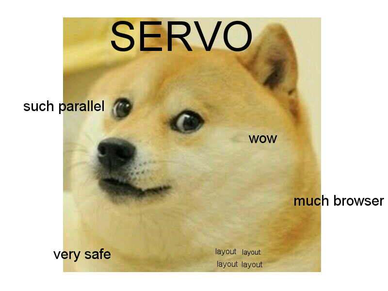

What is Servo?
Servo is a prototype web browser engine written in the Rust language. It is currently developed on 64bit OS X, 64bit Linux, Android, and Gonk (Firefox OS).
Prerequisites
You can find what you need to install on your particular system on our github.
Building
Servo is built with Cargo, the Rust package manager. We also use Mozilla's Mach tools to orchestrate the build and other tasks.
Normal build
To build Servo in development mode. This is useful for development, but the resulting binary is very slow.
cd servo
./mach build --dev
./mach run tests/html/about-mozilla.html
For benchmarking, performance testing, or real-world use, add the --release flag to create an optimized build:
./mach run --release tests/html/about-mozilla.html
Running
Use ./mach run [url] to run Servo.
Commandline Arguments
- -p INTERVAL turns on the profiler and dumps info to the console every INTERVAL seconds
- -s SIZE sets the tile size for painting; defaults to 512
- -z disables all graphical output; useful for running JS / layout tests
Contributing to Servo
Servo welcomes contribution from everyone. Here are the guidelines if you are thinking of helping us:
Contributions
Contributions to Servo or its dependencies should be made in the form of GitHub pull requests. Each pull request will be reviewed by a core contributor (someone with permission to land patches) and either landed in the main tree or given feedback for changes that would be required. All contributions should follow this format, even those from core contributors. If you're looking for easy bugs, have a look at the E-Easy issue tag on GitHub. See HACKING_QUICKSTART.md for more information on how to start working on Servo.
Pull Request Checklist
Branch from the master branch and, if needed, rebase to the current master branch before submitting your pull request. If it doesn't merge cleanly with master you may be asked to rebase your changes. Don't put submodule updates in your pull request unless they are to landed commits. If your patch is not getting reviewed or you need a specific person to review it, you can @-reply a reviewer asking for a review in the pull request or a comment, or you can ask for a review in #servo on irc.mozilla.org. Add tests relevant to the fixed bug or new feature. For a DOM change this will usually be a web platform test; for layout, a reftest. See our testing guide for more information. For specific git instructions, see GitHub workflow 101.
Conduct
We follow the Rust Code of Conduct.
News
Halp what should go here?
Communication
Servo contributors frequent the #servo channel on irc.mozilla.org. You can also join the dev-servo mailing list.
